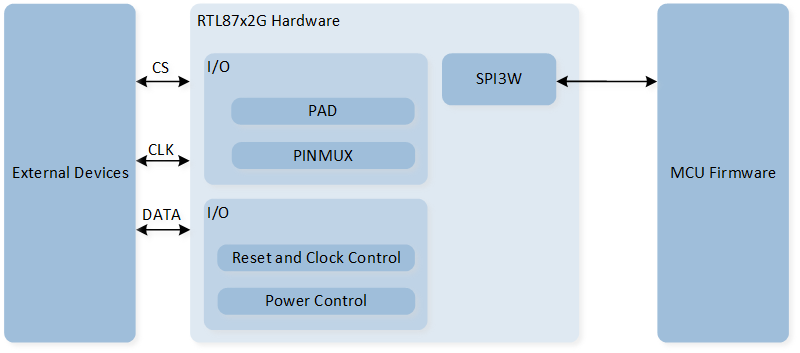
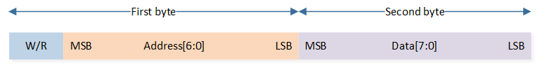
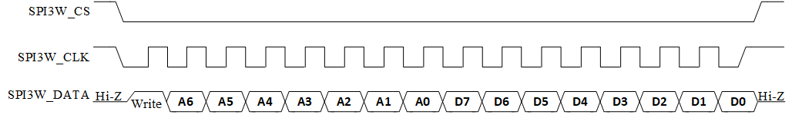
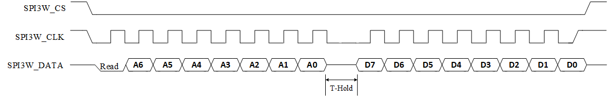
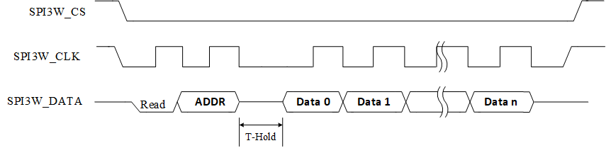
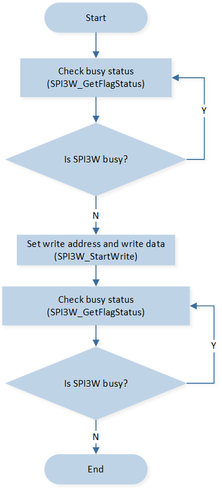
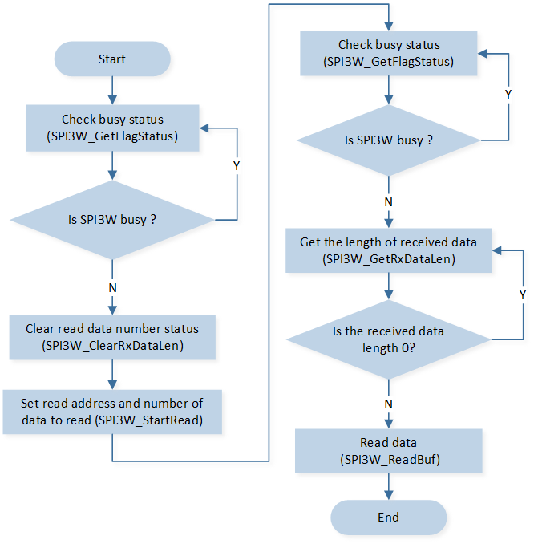

SPI3W
示例列表
本章介绍 SPI3W 示例的详细信息。RTL87x2G 为 SPI3W 外设提供以下示例。
功能概述
3 线串行外设接口（SPI3W）支持单次写入和单次/突发读取。主控制器可以使用 SPI3W 来写入和读取传感器中的寄存器，并读取运动信息。 通信总是由主控制器发起；传感器从不发起数据传输。SPI3W_CS、SPI3W_CLK 和 SPI3W_DATA 可以直接由主控制器驱动。当从传感器寄存器读取数据时，SPI3W_DATA 也可以由传感器驱动。
特性列表
支持 2 线和 3 线传输。
支持 single write.
支持 single/burst read.
可编程的写入和读取之间的延迟。
SPI3W 最大时钟速率：2MHz。
半双工通信。
仅支持主设备。
系统框图
SPI3W 的系统框图如下图所示。 通过调用 MCU Firmware 固件实现 SPI3W Write/Read 等功能，硬件通过 DATA 线进行数据交互，实现与外部设备的通信。

SPI3W 系统框图
数据格式
数据包含两个字节，第一个字节是地址位，最高位是读/写控制位，第二个字节是数据字节。如下所示：

SPI3W 数据格式
写操作
将数据从控制器写入传感器，仅支持 single write 模式，如下图所示。地址字节和数据字节之间无需添加延迟。
{kind=link}

SPI3W 写操作示意图
读操作
Single Read 模式
在 single read 模式下，SPI3W 会先发送一个地址字节，随后 SPI3W_DATA 线变为接收模式，接收对端传感器回复的一个数据字节。
在第一个字节（地址字节）和第二个字节（数据字节）之间，需要添加一个 T-Hold 延迟。
此延迟由 SPI3W_InitTypeDef::SPI3W_ReadDelay 配置。
{kind=link}

SPI3W single read 示意图
Burst Read 模式
在 burst read 模式下，SPI 可以连续读取多个字节的数据。SPI3W 会先发送一个地址字节，随后 SPI3W_DATA 线变为接收模式，接收对端传感器回复的多个数据字节。
在第一个字节（地址字节）和第二个字节（数据字节 0）之间，需要加入一个 T-Hold 的延迟。
此延迟由 SPI3W_InitTypeDef::SPI3W_ReadDelay 配置。从第三个字节（数据字节 1）到第二个字节（数据字节 0）以及直到 burst read 结束之间没有延迟。
{kind=link}

SPI3W burst read 示意图
Polling 模式流程
Polling 写流程
SPI3W 在 polling 模式下写数据的流程如图所示：
{kind=link}

SPI3W polling write flow
bool spi3wire_writebyte(uint8_t address, uint8_t data)
{
uint32_t timeout = 0;
/* Check 3wire spi busy or not */
while (SPI3W_GetFlagStatus(SPI3W_FLAG_BUSY) == SET)
{
timeout++;
if (timeout > 0x1ffff)
{
return false;
}
}
/* Write data */
SPI3W_StartWrite(address, data);
timeout = 0;
while (SPI3W_GetFlagStatus(SPI3W_FLAG_BUSY) == SET)
{
timeout++;
if (timeout > 0x1ffff)
{
return false;
}
}
return true;
}
Polling 读流程
SPI3W 在 polling 模式下读数据的流程如图所示：
{kind=link}

SPI3W polling read flow
uint8_t spi3wire_readbyte(uint8_t address)
{
uint8_t reg_value = 0;
uint32_t timeout = 0;
/* Check spi busy or not */
while (SPI3W_GetFlagStatus(SPI3W_FLAG_BUSY) == SET)
{
timeout++;
if (timeout > 0x1ffff)
{
break;
}
}
/* Clear Receive data length */
SPI3W_ClearRxDataLen();
SPI3W_StartRead(address, 1);
timeout = 0;
while (SPI3W_GetFlagStatus(SPI3W_FLAG_BUSY) == SET)
{
timeout++;
if (timeout > 0x1ffff)
{
break;
}
}
/* Get the length of received data */
while (SPI3W_GetRxDataLen() == 0);
/* Read data */
SPI3W_ReadBuf(®_value, 1);
return reg_value;
}